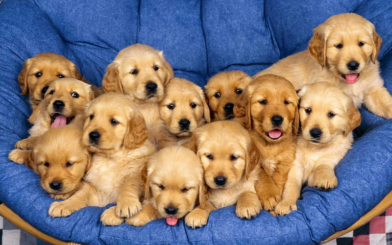
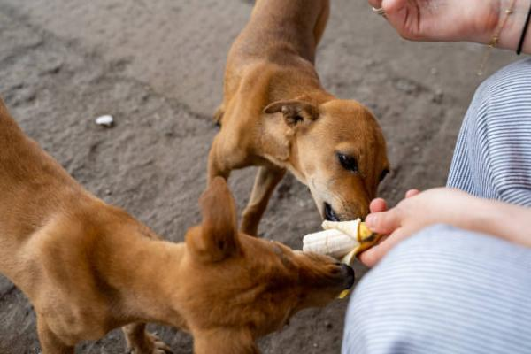

Conoce más sobre La Manada
En La Manada nos dedicamos a la crianza responsable de perros, brindando amor, cuidado y atención desde el primer día. Nuestro objetivo es conectar a cada cachorro con una familia que lo ame.

Garantizar animales sanos, felices y bien cuidados, promoviendo el respeto y el amor por los animales.

✔️ Criadero responsable ✔️ Atención personalizada ✔️ Animales saludables ✔️ Acompañamiento al cliente